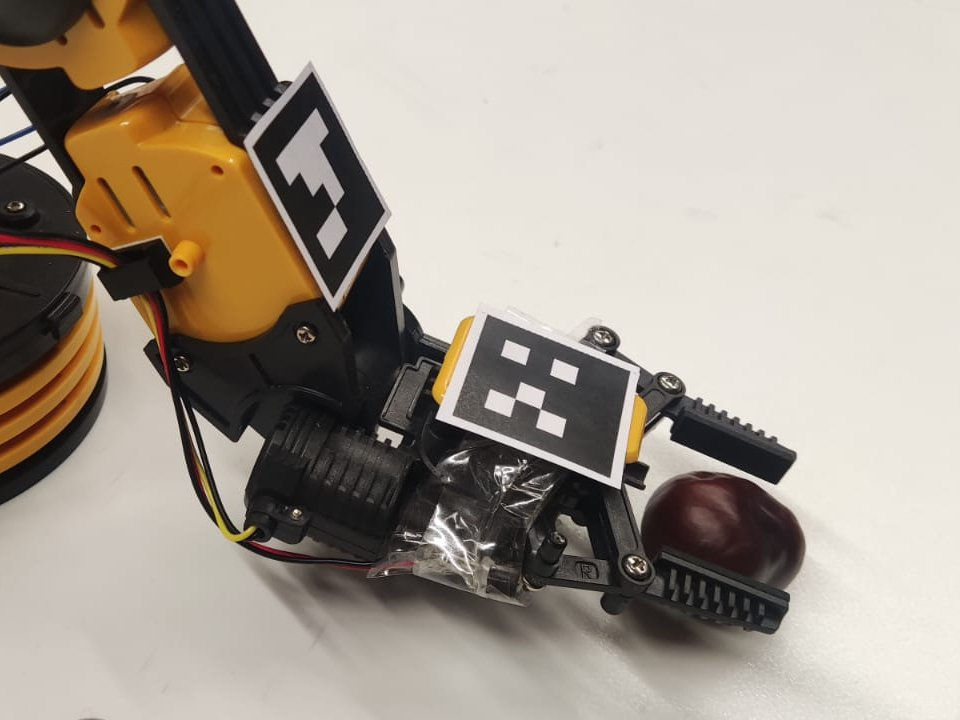
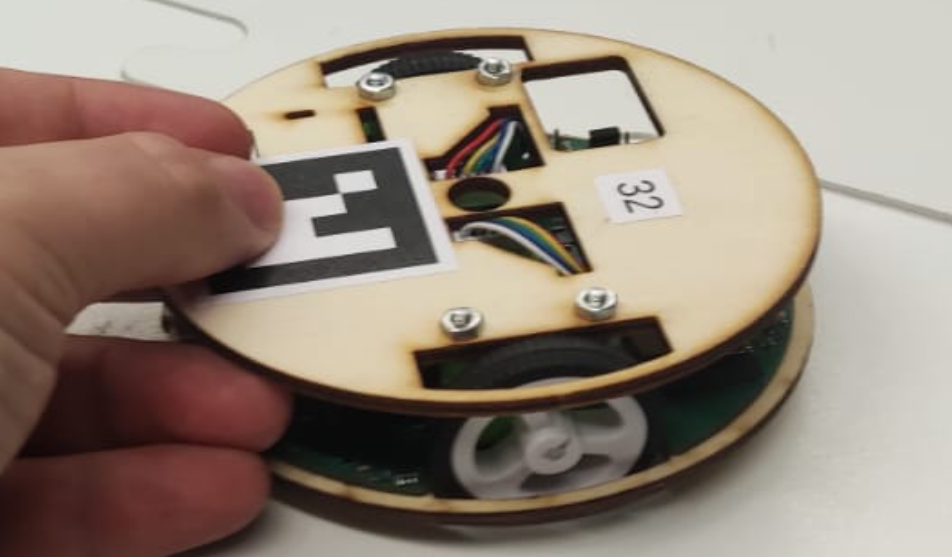
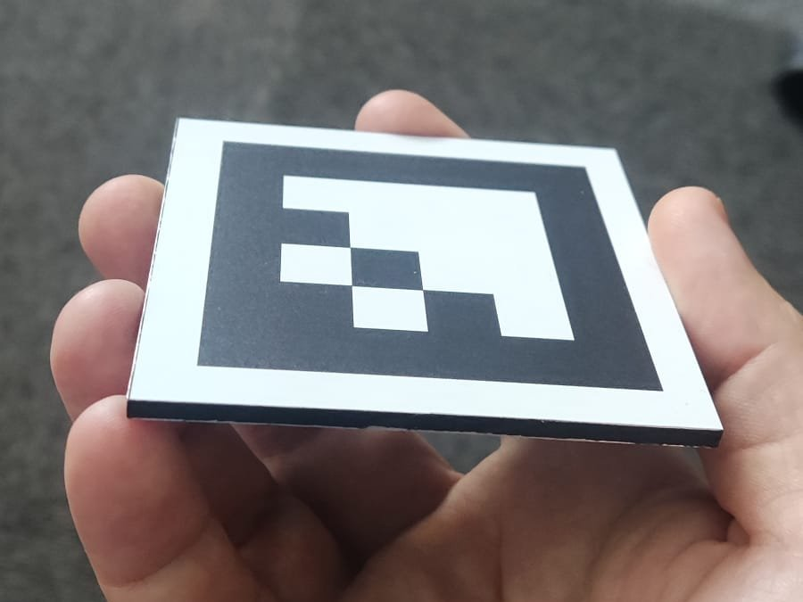

What is Kinest?
Kinest is an Android application for tracking educational robots using ArUco markers. It enables spatial awareness through real-time pose estimation. That allows users to focus on programming and controlling robots without worrying about their physical location in space.



Features
- Detects ArUco markers in real time
- Estimates 3D poses of detected markers relative to camera or defined coordinate system
- Uses Android phone without additional hardware
- Integrated application for optical camera calibration
- Automatically stores last parameters for quick setup
How It Works
Kinest uses ArUco markers, which are square fiducial markers that can be easily detected by computer vision algorithms. The position of the markers is estimated in real-time by its size and deformation of its shape even from single camera images. Quality of markers and camera calibration is crucial for accurate pose estimation. Look into our Shop to obtain suitable markers or into our Resources for ready to print markers.

Get Started
Download Kinest from the Google Play Store:
Download APKObtain markers and other accesories in store:
ShopFor more information, visit our guide:
User Guideand join the community: